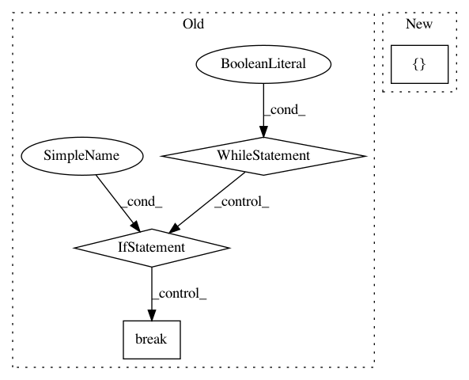

278f71a4b7b4f0b6ada8f78d71dbfd8947ab405e,autokeras/generator.py,HillClimbingClassifierGenerator,generate,#HillClimbingClassifierGenerator#,102
Before Change
model = RandomConvClassifierGenerator(self.n_classes,self.input_shape).generate()
optimal_index = None
optimal_accuracy = None
while True:
ModelTrainer(model, self.x_train, self.y_train, self.x_test, self.y_test, self.verbose).train_model()
_, optimal_accuracy = model.evaluate(self.x_test,self.y_test,self.verbose)
models = self._remove_duplicate(net_transfromer(model))
for index in range(0,len(models)):
ModelTrainer(models[index], self.x_train, self.y_train, self.x_test, self.y_test, self.verbose).train_model()
_, accuracy = model[index].evaluate(self.x_test, self.y_test, self.verbose)
if accuracy > optimal_accuracy:
optimal_accuracy = accuracy
optimal_index = index
model = models[index]
if optimal_index == None:
break
return model
After Change
for index in range(0,len(models)):
models[index].compile(loss=categorical_crossentropy,
optimizer=Adadelta(),
metrics=["accuracy"])
ModelTrainer(models[index], self.x_train, self.y_train, self.x_test, self.y_test, self.verbose).train_model()
_, accuracy = models[index].evaluate(self.x_test, self.y_test, self.verbose)
if accuracy > optimal_accuracy:
In pattern: SUPERPATTERN
Frequency: 3
Non-data size: 4
Instances
Project Name: keras-team/autokeras
Commit Name: 278f71a4b7b4f0b6ada8f78d71dbfd8947ab405e
Time: 2017-12-18
Author: wangtaoo665@gmail.com
File Name: autokeras/generator.py
Class Name: HillClimbingClassifierGenerator
Method Name: generate
Project Name: NifTK/NiftyNet
Commit Name: bd333dd43d69b26015eb3f201afe1772ba701a41
Time: 2018-05-07
Author: wenqi.li@ucl.ac.uk
File Name: niftynet/contrib/dataset_sampler/sampler_uniform_v2.py
Class Name: UniformSampler
Method Name: layer_op
Project Name: OpenNMT/OpenNMT-py
Commit Name: 7b205efea6b504de04311bc55d109cd28d8f3e0c
Time: 2016-12-21
Author: alerer@fb.com
File Name: OpenNMT/preprocess.py
Class Name:
Method Name: makeVocabulary